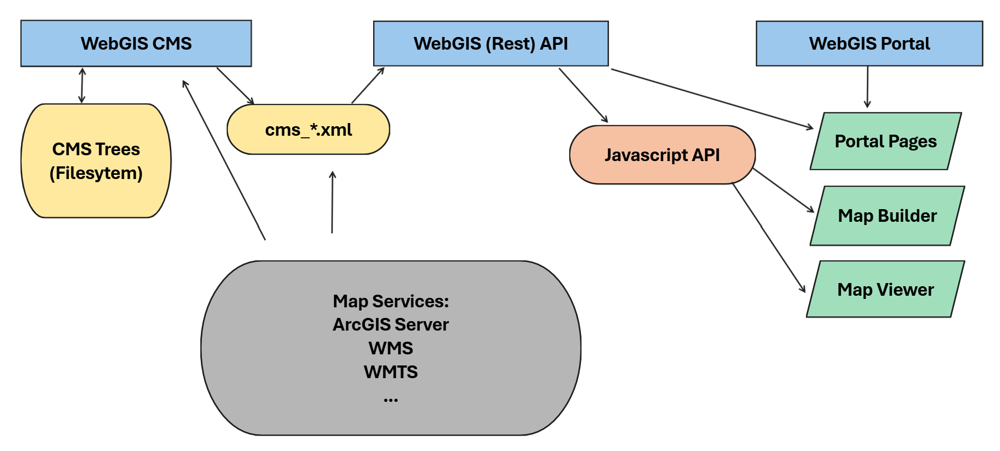

Willkommen bei WebGIS¶
WebGIS ist ein flexibles Open Source Framework zur Erstellung und Bereitstellung interaktiver Karten- und Feature-Dienste. Über eine intuitive Web-Oberfläche können Kartenanwendungen konfiguriert und verwaltet werden – ob lokal am Client oder serverseitig gehostet. Dabei werden Karten mithilfe integrierter Tools erstellt, die es ermöglichen, verschiedene Geodatenquellen als individuell gestaltbare Layer einzubinden.
Fertige Kartenanwendungen können über den WebGIS Server publiziert und über standardisierte Schnittstellen wie WMTS, WMS, ArcGIS Server oder ArcIMS abgerufen werden. So bietet WebGIS eine modulare Plattform für die Realisierung moderner Geoinformationssysteme, die sowohl Administratoren als auch Endanwendern gerecht wird.
Aufbau der WebGIS Plattform (Architektur)¶
Über die WebGIS Plattform können Karten mit Hintergrund- und Fachdaten über eine Browseranwendung angeboten werden. Die Hintergrund- und Fachdaten müssen dabei über gängige Kartendienst-Schnittstellen implementiert werden:
WMTS
WMS
ArcGIS Server
ArcIMS
Die WebGIS Plattform bietet Werkzeuge zur Darstellung und Abfrage dieser Kartendienste. Abhängig von den Eigenschaften des Kartendiensts können die Geodaten auch erstellt und bearbeitet werden.
WebGIS bietet keine Werkzeuge zum Hosten von Kartendiensten. Die Kartendienste müssen von eigenen Applikationen, sogenannten Kartenservern gehostet werden. Beispiele für Kartenserver sind beispielsweise GeoServer (https://geoserver.org/), gView Server (https://github.com/jugstalt/gview-gis) oder auch kommerzielle Produkte wie ArcGIS Server (https://www.esri.com/). Die Kartenserver greifen in der Regel über ihr Backend auf Geodaten in einer Datenbank zu (z.B. PostGreSQL/PostGIS) und implementieren eine der oben angeführten Schnittstellen.
Mit dieser Methode lassen sich sehr gut verteilte Kartenanwendungen erstellen. Möchte man eigene Daten über WebGIS veröffentlichen, ist zusätzlich ein Kartenserver notwendig:

WebGIS Anwendungen (Übersicht)¶
WebGIS besteht aus den drei Anwendungen:
WebGIS CMS: für Administratoren
WebGIS API: Restschnittstelle und Javascript API
WebGIS Portal: Einstiegsseite für den Anwender. Hier werden Portalseiten (Kartensammlungen) und der Karten Viewer angeboten.
Über das WebGIS CMS können Administratoren definieren, welche Dienste über die WebGIS API angeboten werden. Außerdem kann hier festgelegt werden, welche Themen aus den Dienst abgefragt werden können, wie das Abfrageergebnis dargestellt wird, welche Themen bearbeitet werden dürfen, etc. Die Parametrierung wird am Server in einer Baumstruktur im Filesystem abgelegt (entspricht in etwa der Baumstruktur in der CMS Oberfläche). Und die Änderungen im WebGIS CMS der WebGIS API mitzuteilen, wird im CMS ein Deploy ausgeführt, der aus einem CMS-Baum eine XML Datei baut.
Die WebGIS API stellt Aufgrund der CMS XML Dateien Kartendienste zur Verfügung. Diese Dienste können über HTTP REST Requests oder über eine Javascript API abgeholt werden.
Das WebGIS Portal ist die Einstiegsseite für den Anwender. Hier werden Portal-Seiten angeboten. Dabei handelt es sich um Sammlungen von Karten. Eine Karte ist dabei eine Anwendung, die im Karten Viewer angeboten wird, die aus mindestens einem Karten Dienst besteht. Welche Karten angeboten werden, kann ein Administrator bestimmen. Karten werden dabei mit dem MapBuilder erstellt. Dort wird definiert, welche Karten Dienste und Werkzeuge in einer Karten angeboten werden.
Über das WebGIS Portal erfolgt auch die Authentifizierung des Anwenders. Die Rechte eines Anwenders (oder seiner Rolle) können ebenfalls im WebGIS CMS definiert werden und werden dann von der WebGIS API beim Zugriff auf die Karten Dienste berücksichtigt.
WebGIS API¶
Die WebGIS API ist der Kern der WebGIS Plattform. Über diese Anwendung werden (Programmier-) Schnittstellen für den Zugriff auf Kartendienste angeboten. Als Schnittstelle wird eine REST API angeboten. Zur Entwicklung von Browserbasierten wird auch eine Javascript API angeboten, in der die REST API Aufrufe bereits gekapselt sind. Eine Beschreibung der Javascript API findet man hier: https://docs.webgiscloud.com/dev/index.html
Möchte man selber Kartenanwendungen entwickeln (über Javascript) ist in der Regel nur diese Anwendung zu installieren.
WebGIS Portal¶
Das WebGIS Portal ist eine Web-Applikationen, die auf die Schnittstellen der WebGIS API zugreift, und daraus fertige interaktive (Online) Karten bereitstellen kann. Diese Anwendung richtet sich an alle Anwender/WebGIS Betreiber, die die Kartenanwendungen nicht über Programmierschnittstellen (REST, Javascript) entwickeln wollen.
Das WebGIS Portal bietet bereits einen voll funktionsfähigen Kartenviewer, der bereits folgende Funktionen erfüllt:
Darstellung mehrerer Kartendienste innerhalb einer Kartenanwendung
Schaltung einzelner Themen/Schichten/Layer der eingebunden Kartendienste
Legende
Abfragen und Suchen in den eingebundenen Kartendiensten
Maßstäbliches Drucken von Karten im PDF Format
diverse Kartenwerkzeuge (Messen, 3D Modell, Redlining, Editieren von Geodaten, Abfragen, Suchen, Koordinaten, …)
Als Beispiel kann hier auf eine einfache Karte (nur Hintergrundkarten) verwiesen werden: https://maps.webgiscloud.com/examples/map/Basemaps/Geoland%20Basemap.at
Für Administratoren bietet das WebGIS Portal einen MapBuilder, um die Karten zu erstellen. Diese Karten können dann auf sogenannten Kartenportalen (Kartensammlungen) veröffentlicht werden (z.B. https://maps.webgiscloud.com).
WebGIS CMS¶
Das WebGIS CMS ist nur für Administratoren relevant und muss/soll nicht für alle Anwender von WebGIS zugänglich sein. Über diese Anwendung wird festgelegt, welche Kartendienste über eine WebGIS API Instanz zur Verfügung gestellt werden. Außerdem kann für die einzelnen Dienste bestimmt werden, welche Themen sichtbar, abfragbar oder bearbeitbar sind.
Die Konfiguration der Kartendienste erfolgt über eine Web-Oberfläche in einer Baumstruktur. Dieser CMS-Baum kann dann für eine WebGIS API Instanz veröffentlicht werden. In diesem Schritt wird der Baum zu einem CMS File zusammengefasst. Dieses File kann über WebGIS API Konfiguration in eine WebGIS API Instanz einbunden werden. Eine WebGIS API kann dabei mehrere CMS Files einbinden.
(WebGIS) DataLinq¶
WebGIS beinhaltet eine DataLinq Instanz, die DataLinq um den Umgang mit integrierten Karten erweitert.
Das DataLinq Rendering erfolgt dabei innerhalb einer WebGIS API Instanz. Die Konfiguration erfolgt in
api/_config/api.config Abschnitt datalinq.
Das Editieren von DataLinq Objekten (Endpoints, Queries, Views) erfolgt über DataLinq.Code. Der Editor
ist im WebGIS in der CMS Anwendung integriert und kann über die Datei cms/_config/datalinq.config
konfiguriert werden.